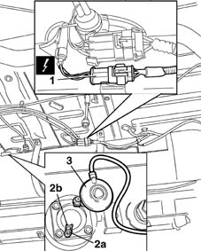
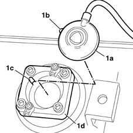

1043A60 gpl level gauge control r r
- Path
- Procedures > 10 ENGINE UNIT > 1043 LGP TANK AND PIPES > 1043A gpl tank > 1043A60 gpl level gauge control r r
- Kind
- repair procedure (removal / refitting; the operation number is the code)
- Applies to
- engines: 1.6 16v; all production periods; only with equipment: GPOWER
- Interactive page
- https://sloeber94.github.io/elrnDB-fMltpl/en/#/2891501
Applies to: engines: 1.6 16v; all production periods; only with equipment: GPOWER and Euro 3
 Removing
Removing
 Refitting
RefittingPlace the car on a lift.
Disconnect the battery negative terminal.
1043E12 gpl tank guard protection r r .
1. Disconnect the electrical connector for the LPG level sensor.
 | Name | Connector |
|---|---|---|
1 | GPL level sensor |
Release the electrical wiring from the securing bands.
2. Loosen the fixing bolts (2a) and open the retaining springs (2b).
3. Remove the device.

Applies to: engines: 1.6 16v; all production periods; only with equipment: GPOWER and Euro 3
Refitting
Removing1. Fit the device (1a), ensuring that the tooth (1b) coincides with the reference mark (1c) on the float unit (1d) fastened to the canister.

Applies to: engines: 1.6 16v; all production periods; only with equipment: GPOWER and Euro 3
Position the retaining springs to retain the device to the float unit and tighten the fixing bolts.
Secure the wiring to the retaining bands.
Connect the electrical connector for the LPG level sensor.
| Name | Connector |
|---|---|---|
- | GPL level sensor |
1043E12 gpl tank guard protection r r .
Connect the battery negative terminal.
Remove the vehicle from the ramp.